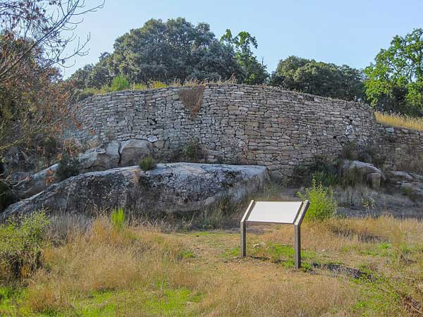
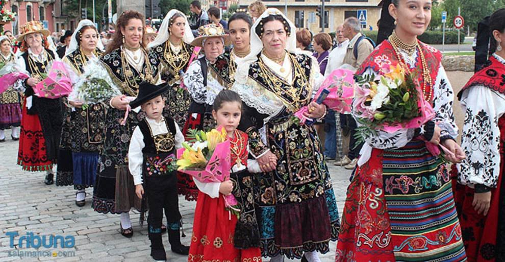

SALAMANCA
LOCALIZACIÓN

Fuente: Wikipedia: Salamanca
LOCALIDADES PRINCIPALES
- Salamanca
- Santa Marta de Tormes
- Béjar
- Ciudad Rodrigo
- Villamayor
- Carbajosa de la Sagrada
- Peñaranda de Bracamonte
- Villares de la Reina
- Guijuelo
- Alba de Tormes
Fuente: Spain info
GEOGRAFÍA
Posee altitud media de 823 m s. n. m. y existen grandes diferencias entre unas zonas y otras. Con 2428 m s. n. m., el punto más alto de la provincia es el pico del Canchal de la Ceja, en la Sierra de Béjar, y con 116 m s. n. m., el punto más bajo es el valle del Salto de Saucelle, en las arribes.
Sus entidades geográficas diferenciadas son la dehesa (que ocupa toda la zona conocida como Campo Charro), la serranía (Sierras de Gata, Francia-Quilamas y Béjar), la llanura cerealista (principalmente en La Armuña, la Tierra de Peñaranda y parte de la Tierra de Alba), el regadío extenso (comarca de Las Villas) y las arribes del Duero, el Tormes, el Uces, el Huebra y el Águeda (en las comarcas de La Ribera y El Abadengo).
HISTORIA
En el territorio de las actuales provincias españolas de Ávila y Salamanca, y en parte de las de Cáceres, Toledo y Zamora, estuvieron asentados los vetones, un pueblo prerromano de cultura celta del que existen numerosos restos arqueológicos por toda la provincia. Varias localidades tienen un origen vetón. Algunas de ellas importantes. Es el caso de Salamanca (Salmantica), Ledesma (Bletisama) y Ciudad Rodrigo (Augustobriga).
Sus poblados solían establecerse a orillas de los ríos y/o en cerros. Pueden citarse Salamanca y Ledesma siguiendo el curso del Tormes,181920 Bermellar, El Castillo (Saldeana), Moncalvo (Hinojosa de Duero), Picón de la Mora (Picones) y Yecla la Vieja (Yecla) junto al Huebra,2122Ciudad Rodrigo, Irueña (Fuenteguinaldo) y Lerilla (Zamarra) en espigón a orillas del Águeda23 y Las Merchanas (Lumbrales), en un meandro del Camaces.
Fuente: Ver Salamanca
La que después sería la calzada romana de la Plata, debió de ser un camino transitado con anterioridad por los tartesos, debido al comercio de estaño.25 Esto explicaría la cercanía del gran complejo arqueológico del Berrueco, situado cerca de El Tejado y construido a modo de acrópolis.
Uno de los legados más llamativos de los vetones son los verracos, unas esculturas de piedra con forma de toro o de cerdo encontradas en varios puntos de la provincia. Su función ha sido siempre muy debatida. Lo que está claro es que denotan la importancia del ganado en esta cultura.
La zona situada entre La Armuña y la penillanura salmantina marcaba la frontera entre vetones y vacceos, el otro pueblo prerromano de la provincia. Estuvo asentado en una pequeña parte del sector noreste. La ciudad de Salamanca (Salmantica) fue fundada por los vetones, pero al ser atacada por Aníbal en el 220 a. C. aparece identificada como ciudad vaccea (Helmantica).
CULTURA
La ciudad de Salamanca celebra el 12 de junio las fiestas de su patrón San Juan de Sahagún y el 8 de septiembre las de su patrona la Virgen de la Vega. También festeja otras muy famosas como el lunes de aguas y la Semana Santa, declarada de interés turístico internacional.
En el resto de la provincia son de interés turístico nacional la procesión del Corpus Christi de Béjar con los Hombres de Musgo, el Carnaval del Toro de Ciudad Rodrigo y la Loa de La Alberca. De interés turístico regional se celebran la fiesta de El Noveno de San Felices de los Gallegos a mediados de mayo, la boda típica de Candelario en el segundo domingo de agosto, el Corpus Christi de La Alberca, la matanza típica de Guijuelo durante enero y febrero, La Charrada de Ciudad Rodrigo cada sábado santo y las fiestas patronales de Santa Teresa de Alba de Tormes a mediados de octubre.
Otras fiestas destacadas son los ofertorios de La Alberca, Mogarraz, Cepeda y San Martín del Castañar, el Petitorio de Navidad de Sequeros, los Espantos de Ledesma, La Misa del Gallo de Macotera, La Robra de El Cabaco, la cena de San Silvestre en Aldea del Obispo y La Chorizá de Puerto Seguro.
El 5 de febrero, se celebra la fiesta de Las Águedas en muchas localidades de la provincia. Es especialmente vistosa la de Miranda del Castañar.139 Otras fiestas comunes en muchas localidades son las animadas por encierros y corridas de toros. Se celebran en Alba de Tormes, Aldeadávila de la Ribera, Cepeda, Ciudad Rodrigo, Fuenteguinaldo, Gallegos de Argañán, Ledesma, Lumbrales, Los Santos, Ledesma, Lumbrales, Macotera, Martín de Yeltes, San Felices de los Gallegos, Sancti-Spíritus, Saucelle, Villarino de los Aires, Villavieja de Yeltes, Vilvestre y Vitigudino.
NATURALEZA
En toda la provincia existen cinco espacios naturales protegidos a nivel regional. Son el parque natural de Arribes del Duero, el parque natural de Las Batuecas - Sierra de Francia, el Espacio natural protegido de El Rebollar, la Sierra de Candelario y la Sierra de las Quilamas. En su totalidad, ocupan una superficie de 210 282 hectáreas.12 Las Sierras de Francia y Béjar y la Meseta Ibérica han sido declaradas reserva de la biosfera.
También existen diez zonas de especial protección para las aves (ZEPA) y trece lugares de importancia comunitaria (LIC). Son las Arribes del Duero, una parte del Campo de Argañán, una parte del Campo de Azaba, los Campos de Alba, Candelario, Las Batuecas - Sierra de Francia, el espacio natural protegido de El Rebollar, la Sierra de las Quilamas, las riberas de los ríos Huebra, Yeltes, Uces y afluentes, las riberas del río Agadón, las riberas del río Águeda, las riberas del río Alagón y afluentes, las riberas del río Tormes y afluentes, y el valle del Cuerpo de Hombre.
TRADICIONES
El traje charro es comúnmente conocido y usado en las festividades de toda la provincia149 aunque en algunas comarcas tienen su propio traje tradicional, como es el caso de la Sierra de Francia,150 El Rebollar,151 La Ribera,152153 La Armuña154155 y la Sierra de Béjar.156 El de esta última es el protagonista principal de la boda típica de Candelario, fiesta de interés turístico regional.
El castellano es la única lengua oficial en toda la provincia de Salamanca pero también se hablan otras muy minoritarias como el leonés y el portugués.
Fuente: Tribuna Salamanca